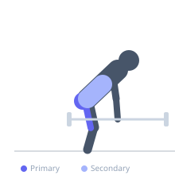
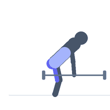

Exercise guide / Barbell Romanian Deadlift
Barbell Romanian Deadlift
The barbell Romanian deadlift is a hip-hinge exercise that primarily targets the hamstrings and gluteus maximus through a loaded eccentric stretch. Unlike the conventional deadlift, the barbell does not touch the floor between reps — the movement focuses on stretching the hamstrings under load by hinging at the hips with a slight knee bend and a neutral spine.
Primary muscles
biceps femoris long head
biceps femoris short head
semitendinosus
semimembranosus
gluteus maximus
Secondary muscles
erector spinae
Stabilizers
transverse abdominis
Equipment
Standard Barbell
Optional
Lifting Straps


Starting position
- Stand with feet hip-width apart holding a barbell at hip level with an overhand grip. Maintain a neutral spine with the chest up and shoulders back.
Setup
- Begin with the barbell held at the thighs after lifting it to standing. Engage the lats and brace the core before each rep.
Steps
- Initiate the movement by pushing the hips backward while maintaining a slight bend in the knees.
- Lower the barbell along the front of the legs, keeping it close to the body.
- Descend until you feel a strong stretch in the hamstrings — typically mid-shin level for most.
- Drive the hips forward to return to the standing position, squeezing the glutes at the top.
Coaching cues
- Push your hips back to a wall behind you
- Keep the bar dragging up your legs on the way up — you should feel it on your shins
Breathing
- Inhale and brace before the descent. Exhale as you drive the hips forward on the ascent.
Range of motion
- Lower until a strong hamstring stretch is felt. Typically between knee and mid-shin depending on individual hamstring flexibility.
Tempo
- 3-1-1-0
Common mistakes
- Rounding the lower back — the movement is a hip hinge, not a spine flex
- Bending the knees excessively, turning it into a deadlift
- Lowering the barbell too far — only go as low as the hamstrings allow without spinal flexion
Safety
- If you feel the stretch in the lower back rather than the hamstrings, reduce range and focus on the hip hinge pattern
- Use lifting straps for heavy sets to prevent grip from being the limiting factor
Training
- hypertrophy: 6–12 reps
- endurance: 12–15 reps
- hypertrophy: 3–4 sets
- endurance: 2–3 sets
- Rest: {'hypertrophy': 90, 'endurance': 60}